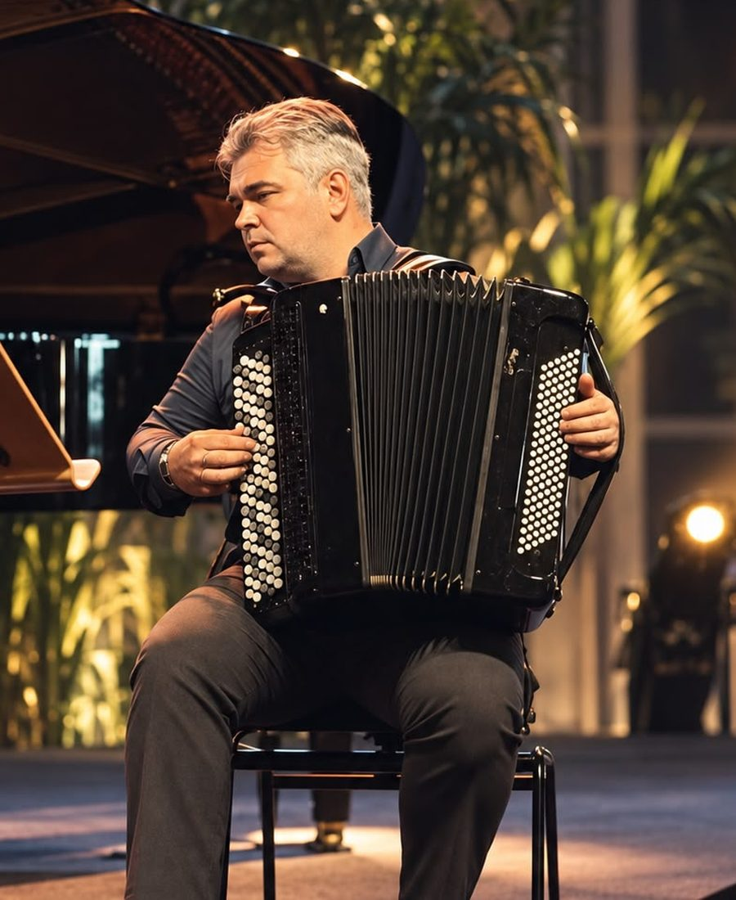
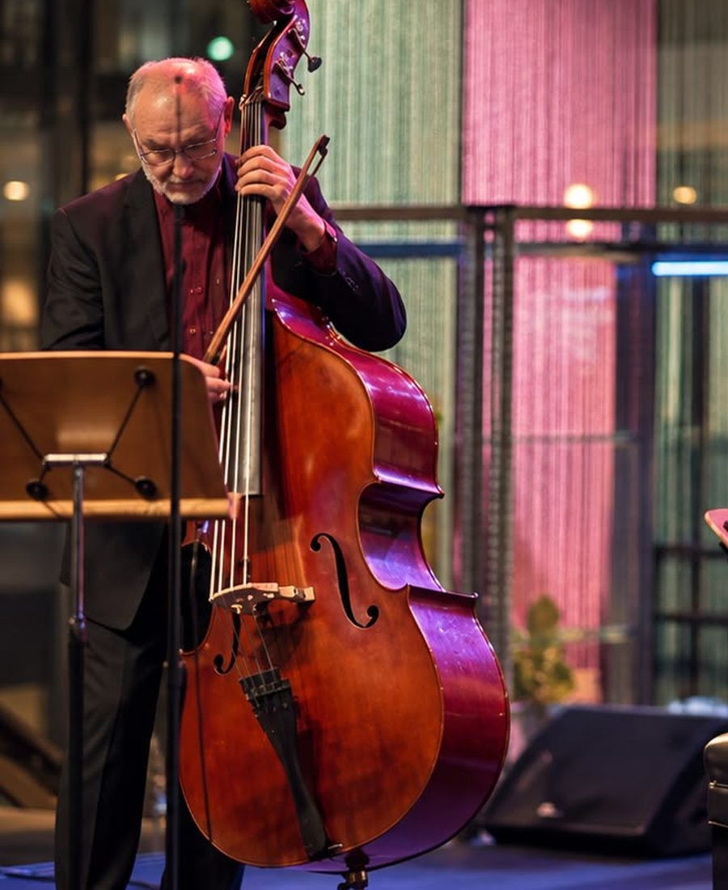
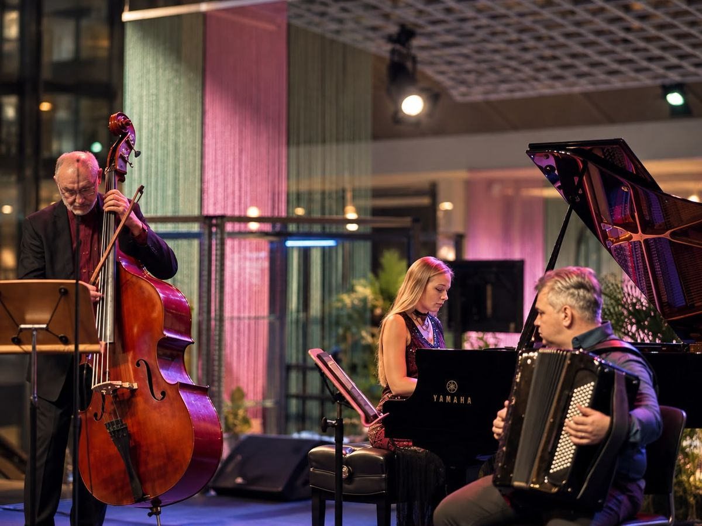

Lessons
Seven or seventy. You'll play something real within months.
Three teachers, one studio. Aleks takes accordion and bayan from first bellows to competition repertoire; Guennadi takes double bass and chamber coaching; Kseniia takes piano, from first scales to conservatory audition. Over a hundred students so far, several with international awards.
Book a trial lesson
Accordion & bayan
with Aleks Farseev
Weekly 45 or 60-minute lessons. Technique, sight-reading and repertoire drawn from the free score library, so practice material never runs out. Graded exam preparation on request, from complete beginner to competition level.
Book an accordion lesson
Double bass
with Guennadi Mouzyka
Orchestral and solo repertoire, bow technique and audition preparation, from the Principal Bass of the Singapore Symphony Orchestra and an Artist Faculty member at the Yong Siew Toh Conservatory.
Book a double bass lessonPiano
with Kseniia Vokhmianina
From first scales to conservatory audition, with a multi-award-winning concert pianist who has performed from the Seoul Arts Centre and Mendelssohn-Haus Leipzig to the Pablo Casals Festival, and who is Music Programme Director and piano teacher at Madison Academy of Music, after eight years on the Music Faculty at the School of the Arts.
Book a piano lesson
Chamber & ensemble
with all three
Playing with other people is a separate skill, and it is the one that gets left out. Small-group coaching for duos and trios in any combination of accordion, piano and strings, with a performance at the end of each term.
Ask about ensemble coachingDon't own an instrument yet?
Start on ours for the first month, then buy the one that fits — we'll tell you which, and put the trial fee toward it.
Clases
Siete años o setenta. Tocarás algo de verdad en unos meses.
Tres profesores, un estudio. Aleks lleva acordeón y bayán, desde el primer fuelle hasta el repertorio de concurso; Guennadi lleva contrabajo y música de cámara; Kseniia lleva piano, de las primeras escalas a la audición de conservatorio. Más de cien alumnos hasta ahora, varios con premios internacionales.
Reservar una clase de pruebaAcordeón & bayán
con Aleks Farseev
Clases semanales de 45 o 60 minutos. Técnica, lectura a primera vista y repertorio sacado de la biblioteca de partituras gratuita, así que nunca se acaba el material de estudio. Preparación de exámenes por grados si se pide, del principiante absoluto al nivel de concurso.
Reservar clase de acordeónContrabajo
con Guennadi Mouzyka
Repertorio orquestal y solista, técnica de arco y preparación de audiciones, con el contrabajo principal de la Singapore Symphony Orchestra y miembro del Artist Faculty del Yong Siew Toh Conservatory.
Reservar clase de contrabajoPiano
con Kseniia Vokhmianina
De las primeras escalas a la audición de conservatorio, con una pianista de concierto multipremiada que ha actuado desde el Seoul Arts Centre y la Mendelssohn-Haus de Leipzig hasta el Festival Pablo Casals, y que es directora del programa de música y profesora de piano en la Madison Academy of Music, tras ocho años en el departamento de música de la School of the Arts.
Reservar clase de pianoCámara & conjunto
con los tres
Tocar con otra gente es una destreza aparte, y es justo la que se queda fuera. Clases en grupo reducido para dúos y tríos en cualquier combinación de acordeón, piano y cuerda, con una actuación al final de cada trimestre.
Preguntar por las clases de conjunto¿Todavía no tienes instrumento?
Empieza con uno nuestro el primer mes y después compra el que te encaje: te diremos cuál y descontaremos del precio lo que hayas pagado por la prueba.
Cours
Sept ans ou soixante-dix. Vous jouerez quelque chose de vrai en quelques mois.
Trois professeurs, un studio. Aleks prend l'accordéon et le bayan, du premier coup de soufflet au répertoire de concours ; Guennadi prend la contrebasse et la musique de chambre ; Kseniia prend le piano, des premières gammes au concours d'entrée au conservatoire. Plus de cent élèves à ce jour, dont plusieurs primés à l'international.
Réserver un cours d'essaiAccordéon & bayan
avec Aleks Farseev
Cours hebdomadaires de 45 ou 60 minutes. Technique, déchiffrage et répertoire puisé dans la bibliothèque de partitions gratuite : de quoi travailler sans jamais être à court. Préparation aux examens par grades sur demande, du débutant complet au niveau concours.
Réserver un cours d'accordéonContrebasse
avec Guennadi Mouzyka
Répertoire d'orchestre et de soliste, technique d'archet et préparation aux auditions, avec la contrebasse solo du Singapore Symphony Orchestra, membre de l'Artist Faculty du Yong Siew Toh Conservatory.
Réserver un cours de contrebassePiano
avec Kseniia Vokhmianina
Des premières gammes au concours d'entrée au conservatoire, avec une pianiste de concert plusieurs fois primée, qui s'est produite du Seoul Arts Centre et de la Mendelssohn-Haus de Leipzig au Festival Pablo Casals, et qui est directrice du programme de musique et professeure de piano à la Madison Academy of Music, après huit ans au département de musique de la School of the Arts.
Réserver un cours de pianoMusique de chambre & ensemble
avec les trois
Jouer avec d'autres est un métier à part, et c'est justement celui que l'on laisse de côté. Coaching en petit groupe pour duos et trios, dans toutes les combinaisons d'accordéon, de piano et de cordes, avec un concert à la fin de chaque trimestre.
Se renseigner sur l'ensemblePas encore d'instrument ?
Commencez sur l'un des nôtres le premier mois, puis achetez celui qui vous convient — nous vous dirons lequel, et le prix de l'essai viendra en déduction.
Unterricht
Sieben oder siebzig. In wenigen Monaten spielen Sie etwas Richtiges.
Drei Lehrer, ein Studio. Aleks übernimmt Akkordeon und Bajan, vom ersten Balgzug bis zum Wettbewerbsrepertoire; Guennadi übernimmt Kontrabass und Kammermusik; Kseniia übernimmt Klavier, von den ersten Tonleitern bis zum Vorspiel am Konservatorium. Über hundert Schüler bisher, einige davon mit internationalen Auszeichnungen.
Probestunde buchenAkkordeon & Bajan
mit Aleks Farseev
Wöchentlich 45 oder 60 Minuten. Technik, Blattspiel und Repertoire aus der kostenlosen Notenbibliothek, damit das Übematerial nie ausgeht. Vorbereitung auf Stufenprüfungen auf Wunsch, vom kompletten Anfang bis zum Wettbewerbsniveau.
Akkordeonstunde buchenKontrabass
mit Guennadi Mouzyka
Orchester- und Solorepertoire, Bogentechnik und Probespielvorbereitung, beim Solokontrabassisten des Singapore Symphony Orchestra und Mitglied der Artist Faculty des Yong Siew Toh Conservatory.
Kontrabassstunde buchenKlavier
mit Kseniia Vokhmianina
Von den ersten Tonleitern bis zum Vorspiel am Konservatorium, bei einer vielfach ausgezeichneten Konzertpianistin, die vom Seoul Arts Centre und dem Mendelssohn-Haus Leipzig bis zum Pablo-Casals-Festival aufgetreten ist und als Music Programme Director und Klavierlehrerin an der Madison Academy of Music unterrichtet — nach acht Jahren an der Music Faculty der School of the Arts.
Klavierstunde buchenKammermusik & Ensemble
mit allen dreien
Mit anderen zu spielen ist eine eigene Fähigkeit, und genau sie fällt meistens unter den Tisch. Unterricht in kleinen Gruppen für Duos und Trios in jeder Besetzung aus Akkordeon, Klavier und Streichern, mit einem Auftritt am Ende jedes Semesters.
Nach Ensembleunterricht fragenNoch kein eigenes Instrument?
Fangen Sie den ersten Monat auf unserem an und kaufen Sie danach das passende — wir sagen Ihnen, welches, und rechnen die Leihgebühr an.
Lezioni
Sette anni o settanta. In pochi mesi suonerai qualcosa di vero.
Tre insegnanti, uno studio. Aleks segue fisarmonica e bayan, dal primo mantice al repertorio da concorso; Guennadi segue contrabbasso e musica da camera; Kseniia segue pianoforte, dalle prime scale all'audizione di conservatorio. Oltre cento allievi finora, diversi con premi internazionali.
Prenota una lezione di provaFisarmonica & bayan
con Aleks Farseev
Lezioni settimanali da 45 o 60 minuti. Tecnica, lettura a prima vista e repertorio preso dalla biblioteca di spartiti gratuita, così il materiale da studiare non finisce mai. Preparazione agli esami per gradi su richiesta, dal principiante assoluto al livello da concorso.
Prenota una lezione di fisarmonicaContrabbasso
con Guennadi Mouzyka
Repertorio orchestrale e solistico, tecnica d'arco e preparazione alle audizioni, con il primo contrabbasso della Singapore Symphony Orchestra e membro dell'Artist Faculty dello Yong Siew Toh Conservatory.
Prenota una lezione di contrabbassoPianoforte
con Kseniia Vokhmianina
Dalle prime scale all'audizione di conservatorio, con una pianista da concerto pluripremiata che si è esibita dal Seoul Arts Centre e dalla Mendelssohn-Haus di Lipsia al Festival Pablo Casals, e che è direttrice del programma di musica e insegnante di pianoforte alla Madison Academy of Music, dopo otto anni alla Music Faculty della School of the Arts.
Prenota una lezione di pianoforteCamera & insieme
con tutti e tre
Suonare con altri è un'abilità a sé, ed è proprio quella che resta sempre fuori. Lezioni in piccoli gruppi per duo e trio in qualsiasi combinazione di fisarmonica, pianoforte e archi, con un concerto alla fine di ogni trimestre.
Chiedi delle lezioni d'insiemeNon hai ancora uno strumento?
Il primo mese usi il nostro, poi compri quello giusto per te: ti diremo quale, e scaleremo dal prezzo quanto hai pagato per la prova.
Aulas
Sete anos ou setenta. Em poucos meses toca alguma coisa a sério.
Três professores, um estúdio. O Aleks dá acordeão e bayan, do primeiro fole ao repertório de concurso; o Guennadi dá contrabaixo e música de câmara; a Kseniia dá piano, das primeiras escalas à audição de conservatório. Mais de cem alunos até agora, vários com distinções internacionais.
Marcar uma aula experimentalAcordeão & bayan
com Aleks Farseev
Aulas semanais de 45 ou 60 minutos. Técnica, leitura à primeira vista e repertório tirado da biblioteca de partituras gratuita, para que nunca falte material de estudo. Preparação para exames por graus, se quiser, do principiante absoluto ao nível de concurso.
Marcar uma aula de acordeãoContrabaixo
com Guennadi Mouzyka
Repertório orquestral e a solo, técnica de arco e preparação de audições, com o contrabaixo principal da Singapore Symphony Orchestra e membro da Artist Faculty do Yong Siew Toh Conservatory.
Marcar uma aula de contrabaixoPiano
com Kseniia Vokhmianina
Das primeiras escalas à audição de conservatório, com uma pianista de concerto várias vezes premiada que já se apresentou do Seoul Arts Centre e da Mendelssohn-Haus de Leipzig ao Festival Pablo Casals, e que é diretora do programa de música e professora de piano na Madison Academy of Music, depois de oito anos na Music Faculty da School of the Arts.
Marcar uma aula de pianoCâmara & grupo
com os três
Tocar com outras pessoas é uma competência à parte, e é justamente a que fica sempre de fora. Aulas em pequeno grupo para duos e trios em qualquer combinação de acordeão, piano e cordas, com um concerto no fim de cada período.
Perguntar sobre aulas de grupoAinda não tem instrumento?
Comece no nosso durante o primeiro mês e depois compre o que lhe servir — dizemos-lhe qual, e abatemos no preço o que pagou pela experiência.
Уроки
Семь лет или семьдесят. Через несколько месяцев вы сыграете настоящую музыку.
Три преподавателя, один класс. Александр ведёт аккордеон и баян — от первого движения мехом до конкурсной программы; Геннадий ведёт контрабас и камерный ансамбль; Ксения ведёт фортепиано — от первых гамм до прослушивания в консерваторию. Больше сотни учеников на сегодня, несколько из них — лауреаты международных конкурсов.
Записаться на пробный урокАккордеон & баян
с Александром Фарсеевым
Уроки по 45 или 60 минут раз в неделю. Техника, чтение с листа и репертуар из бесплатной библиотеки нот, так что материал для занятий не закончится. Подготовка к экзаменам по уровням — по запросу, от полного новичка до конкурсного уровня.
Записаться на аккордеонКонтрабас
с Геннадием Музыкой
Оркестровый и сольный репертуар, работа над смычком и подготовка к прослушиваниям — у концертмейстера группы контрабасов Сингапурского симфонического оркестра и педагога Artist Faculty консерватории Yong Siew Toh.
Записаться на контрабасФортепиано
с Ксенией Вохмяниной
От первых гамм до прослушивания в консерваторию — у концертирующей пианистки, лауреата множества конкурсов, которая играла от Seoul Arts Centre и Mendelssohn-Haus в Лейпциге до фестиваля Пабло Казальса во Франции. Сейчас она музыкальный руководитель и преподаватель фортепиано в Madison Academy of Music, а до этого восемь лет преподавала в School of the Arts.
Записаться на фортепианоКамерная музыка & ансамбль
со всеми тремя
Играть с другими — отдельное умение, и как раз его обычно упускают. Занятия в малых составах, дуэтами и трио, в любом сочетании аккордеона, фортепиано и струнных, с концертом в конце каждого семестра.
Спросить про ансамбльЕщё нет своего инструмента?
Первый месяц занимайтесь на нашем, а потом купите тот, что вам подходит, — мы скажем какой и зачтём плату за пробный урок в его стоимость.
课程
七岁或七十岁。几个月内你就能弹出真正的曲子。
三位老师，一间琴房。亚历山大教手风琴和巴扬，从第一次拉风箱一直教到比赛曲目；根纳季教低音提琴和室内乐；克谢尼娅教钢琴，从最初的音阶一直带到音乐学院的入学考试。至今教过一百多名学生，其中几位拿了国际奖项。
预约试听课钢琴
克谢尼娅·沃赫米亚尼娜
从最初的音阶到音乐学院的入学考试，老师是一位屡获大奖的音乐会钢琴家，演出足迹从首尔艺术中心、莱比锡门德尔松故居一直到法国的帕布罗·卡萨尔斯音乐节。她现任 Madison Academy of Music 音乐课程总监兼钢琴教师，此前在 School of the Arts 任教八年。
预约钢琴课レッスン
7歳でも70歳でも。数か月で、ちゃんとした曲が弾けます。
教師は三人、教室はひとつ。アレクサンドルはアコーディオンとバヤンを、はじめての蛇腹からコンクールの曲目まで。ゲンナジーはコントラバスと室内楽を。クセニヤはピアノを、最初のスケールから音楽院の受験まで見ます。これまでに100人を超える生徒が学び、そのうち何人かは国際的な賞を得ました。
体験レッスンを予約するアコーディオン & バヤン
講師：アレクサンドル・ファルセーエフ
週1回、45分または60分のレッスン。テクニック、初見、そして無料の楽譜ライブラリーから選ぶ曲目——練習する材料が尽きることはありません。グレード試験の対策もご希望に応じて、まったくの初心者からコンクールのレベルまで。
アコーディオンのレッスンを予約コントラバス
講師：ゲンナジー・ムジカ
オーケストラ曲とソロ曲、弓の技術、そしてオーディション対策まで。シンガポール交響楽団の首席コントラバス奏者であり、ヨン・シウ・トー音楽院のアーティスト・ファカルティでもある講師が教えます。
コントラバスのレッスンを予約ピアノ
講師：クセニヤ・ヴォフミャニナ
最初のスケールから音楽院の受験まで。ソウル・アーツセンターやライプツィヒのメンデルスゾーン・ハウスから、フランスのパブロ・カザルス音楽祭まで演奏してきた、数々の賞に輝くコンサート・ピアニストが教えます。現在は Madison Academy of Music の音楽プログラム・ディレクター兼ピアノ講師で、それ以前は School of the Arts で8年間指導していました。
ピアノのレッスンを予約室内楽 & アンサンブル
講師：三人とも
人と一緒に弾くのは、それ自体が別の技術です。そして、たいてい抜け落ちてしまうのがこの技術です。アコーディオン、ピアノ、弦楽器の自由な組み合わせで、デュオやトリオの少人数レッスン。学期の終わりには発表の場があります。
アンサンブルについて聞くまだ楽器をお持ちでない方へ。
最初の1か月は教室の楽器でどうぞ。そのあと、合う一台を買ってください——どれが合うかはこちらでお伝えしますし、体験の費用はその代金に充てます。
레슨
일곱 살이든 일흔 살이든. 몇 달 안에 진짜 음악을 연주하게 됩니다.
선생 셋, 스튜디오 하나. 알렉산드르는 아코디언과 바얀을 처음 벨로우즈를 여는 순간부터 콩쿠르 레퍼토리까지 가르치고, 겐나디는 더블베이스와 실내악을, 크세니야는 피아노를 첫 스케일부터 음악원 입시까지 지도합니다. 지금까지 백 명이 넘는 학생이 거쳐 갔고, 그중 몇 사람은 국제 무대의 상을 받았습니다.
체험 레슨 예약하기아코디언 & 바얀
알렉산드르 파르세예프
주 1회 45분 또는 60분 레슨. 테크닉과 초견, 그리고 무료 악보 라이브러리에서 가져오는 레퍼토리로 연습할 곡이 떨어지지 않습니다. 원하시면 등급 시험 준비도 함께합니다. 완전한 초보부터 콩쿠르 수준까지.
아코디언 레슨 예약더블베이스
겐나디 무지카
오케스트라와 독주 레퍼토리, 활 테크닉, 오디션 준비까지. 싱가포르 심포니 오케스트라의 더블베이스 수석이자 용 시우 토 음악원 아티스트 교수진에게 배웁니다.
더블베이스 레슨 예약피아노
크세니야 보흐먀니나
첫 스케일부터 음악원 입시까지. 서울예술의전당과 라이프치히 멘델스존 하우스에서 프랑스 파블로 카살스 페스티벌까지 무대에 서 온, 여러 상을 받은 연주자가 지도합니다. 현재 Madison Academy of Music의 음악 프로그램 디렉터이자 피아노 교사이며, 그 전에는 School of the Arts에서 8년간 가르쳤습니다.
피아노 레슨 예약실내악 & 앙상블
세 사람 모두
다른 사람과 함께 연주하는 것은 별개의 기술이고, 대개 빠지는 것이 바로 그 기술입니다. 아코디언, 피아노, 현악기를 자유롭게 조합한 듀오와 트리오 소그룹 지도로, 학기마다 마지막에 연주회를 엽니다.
앙상블 지도 문의아직 악기가 없으신가요?
첫 달은 저희 악기로 시작하시고, 그다음에 맞는 것을 사시면 됩니다. 어떤 악기인지 저희가 알려 드리고, 체험 레슨비는 악기 값에서 빼 드립니다.
Kelas
Tujuh tahun atau tujuh puluh. Dalam beberapa bulan anda akan memainkan sesuatu yang sebenar.
Tiga guru, satu studio. Aleks mengajar akordion dan bayan, dari tarikan hembus pertama hingga ke repertoir pertandingan; Guennadi mengajar double bass dan bimbingan muzik kamar; Kseniia mengajar piano, dari skala pertama hingga ke uji bakat konservatori. Lebih seratus pelajar setakat ini, beberapa daripadanya membawa pulang anugerah antarabangsa.
Tempah kelas percubaanAkordion & bayan
bersama Aleks Farseev
Kelas mingguan 45 atau 60 minit. Teknik, membaca not serta-merta, dan repertoir daripada perpustakaan skor percuma, jadi bahan latihan tidak akan kehabisan. Persediaan peperiksaan bergred atas permintaan, daripada pemula sepenuhnya hingga ke tahap pertandingan.
Tempah kelas akordionDouble bass
bersama Guennadi Mouzyka
Repertoir orkestra dan solo, teknik penggesek dan persediaan uji bakat, daripada Ketua Bes Singapore Symphony Orchestra yang juga tenaga pengajar Artist Faculty di Yong Siew Toh Conservatory.
Tempah kelas double bassPiano
bersama Kseniia Vokhmianina
Daripada skala pertama hingga ke uji bakat konservatori, bersama pemain piano konsert yang memenangi pelbagai anugerah dan pernah membuat persembahan dari Seoul Arts Centre dan Mendelssohn-Haus Leipzig hingga Festival Pablo Casals di Perancis. Beliau kini Pengarah Program Muzik dan guru piano di Madison Academy of Music, selepas lapan tahun di Fakulti Muzik School of the Arts.
Tempah kelas pianoMuzik kamar & ensembel
bersama ketiga-tiganya
Bermain bersama orang lain ialah kemahiran yang berlainan, dan itulah yang selalu tertinggal. Bimbingan kumpulan kecil untuk duo dan trio dalam apa jua gabungan akordion, piano dan alat bertali, dengan satu persembahan pada hujung setiap penggal.
Tanya tentang bimbingan ensembelBelum ada alat muzik sendiri?
Mulakan dengan alat kami pada bulan pertama, kemudian beli yang sesuai — kami akan beritahu yang mana satu, dan yuran percubaan itu ditolak daripada harganya.
பாடங்கள்
ஏழு வயதோ எழுபதோ. சில மாதங்களில் உண்மையான ஒன்றை வாசிப்பீர்கள்.
மூன்று ஆசிரியர்கள், ஒரு ஸ்டூடியோ. முதல் காற்றிழுப்பு முதல் போட்டி இசைப்பட்டியல் வரை அக்கார்டியனும் பயானும் Aleks-இடம்; டபுள் பேஸும் சேம்பர் இசைப் பயிற்சியும் Guennadi-இடம்; முதல் ஸ்கேல் முதல் இசைக்கல்லூரித் தேர்வு வரை பியானோ Kseniia-இடம். இதுவரை நூறுக்கும் மேற்பட்ட மாணவர்கள், அவர்களில் சிலர் சர்வதேச விருதுகள் பெற்றவர்கள்.
சோதனை வகுப்பு முன்பதிவுஅக்கார்டியன் & பயான்
Aleks Farseev-உடன்
வாரந்தோறும் 45 அல்லது 60 நிமிட வகுப்புகள். நுட்பம், பார்த்து வாசித்தல், இலவச இசைக்குறிப்பு நூலகத்திலிருந்து இசைப்பட்டியல் — அதனால் பயிற்சிப் பாடல்கள் தீர்ந்துபோகாது. கேட்டால் நிலைவாரியான தேர்வுத் தயாரிப்பும் உண்டு, முற்றிலும் புதியவர் முதல் போட்டி நிலை வரை.
அக்கார்டியன் வகுப்பு முன்பதிவுடபுள் பேஸ்
Guennadi Mouzyka-உடன்
இசைக்குழு மற்றும் தனி இசைப்பட்டியல், வில் நுட்பம், தேர்வுத் தயாரிப்பு — சிங்கப்பூர் சிம்பொனி ஆர்கெஸ்ட்ராவின் முதன்மை பேஸ் கலைஞரும், Yong Siew Toh இசைக்கல்லூரியின் Artist Faculty உறுப்பினருமானவரிடமிருந்து.
டபுள் பேஸ் வகுப்பு முன்பதிவுபியானோ
Kseniia Vokhmianina-உடன்
முதல் ஸ்கேல் முதல் இசைக்கல்லூரித் தேர்வு வரை — Seoul Arts Centre, Leipzig-இன் Mendelssohn-Haus முதல் பிரான்சின் Pablo Casals திருவிழா வரை வாசித்த, பல விருதுகள் பெற்ற கச்சேரிப் பியானோ கலைஞரிடம். இவர் தற்போது Madison Academy of Music-இன் இசைத் திட்ட இயக்குநரும் பியானோ ஆசிரியரும்; அதற்கு முன் School of the Arts-இல் எட்டு ஆண்டுகள் கற்பித்தவர்.
பியானோ வகுப்பு முன்பதிவுசேம்பர் & குழு இசை
மூவருடனும்
மற்றவர்களுடன் சேர்ந்து வாசிப்பது தனி ஒரு திறன்; பெரும்பாலும் விடுபட்டுப் போவதும் அதுதான். அக்கார்டியன், பியானோ, நரம்புக் கருவிகள் எந்தக் கலவையிலும் இரட்டையர், மூவர் குழுக்களுக்குச் சிறு குழுப் பயிற்சி; ஒவ்வொரு பருவ முடிவிலும் ஒரு நிகழ்ச்சி.
குழு இசைப் பயிற்சி பற்றி கேட்கஇன்னும் சொந்தக் கருவி இல்லையா?
முதல் மாதம் எங்கள் கருவியிலேயே தொடங்குங்கள், பிறகு பொருத்தமானதை வாங்குங்கள் — எது என்று நாங்கள் சொல்கிறோம், சோதனைக் கட்டணத்தை அதன் விலையில் கழித்துவிடுகிறோம்.